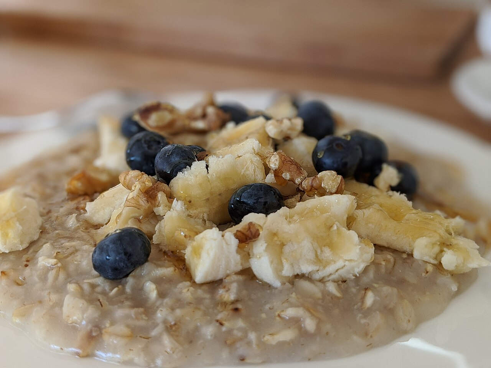
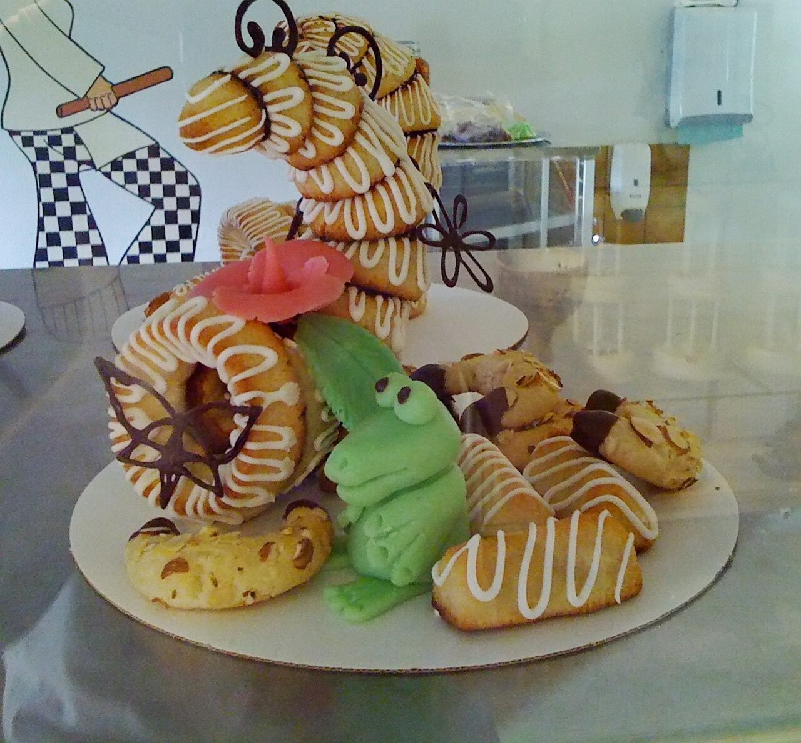

Keturių dienų kelionė į Kopenhagą — istorinis senamiestis, karališkosios pilys, didieji muziejai, kanalų vaizdai ir gatvės maistas, o šeštadienio vakarą — Deep Purple koncertas Royal Arenoje. Nakvojame bute su kanalo vaizdu Sydhavnen rajone. Automobilis nenuomojamas — visą kelionę judame pėsčiomis, metro ir autobusu. Spalio pabaiga Kopenhagoje būna vėsi ir drėgna, todėl kiekvienai dienai paruoštas ir lietaus planas B.
🏠 Nakvynė
Apartment with canal view
Kenny Drews Vej 31, 2 sal lej 9, Sydhavnen, 2450 Kopenhaga, Danija
9,0/10 · 50 atsiliepimų (Booking.com)
Butas su kanalo vaizdu Sydhavnen rajone — naujesnė, ramesnė gyvenamoji dalis prie vandens, nutolusi nuo senamiesčio. 1 miegamasis, svetainė, pilnai įrengta virtuvė, terasa ir balkonas į vidinį kiemą. Visa nuoma trims naktims — 780 € (≈260 €/naktį).
Booking.com 🔎 Booking.com: 2026-10-23–2026-10-26, 4 žm.
Apartamentų aprašymas
Apartamentai su kanalo vaizdu įsikūrę Kopenhagoje, Sidlandijos (Zealand) regione, ir turi terasą. Iš apartamentų atsiveria ežero ir sodo vaizdas, veikia nemokamas belaidis internetas. Būstas nerūkantiems, nutolęs 2,8 km nuo Bella Center. Erdviame bute yra 1 miegamasis, 1 vonios kambarys, patalynė, rankšluosčiai, plokščias televizorius, valgomasis, pilnai įrengta virtuvė ir terasa su vaizdu į jūrą. Nuo balkono, kuriame yra lauko baldai, atsiveria vidinio kiemo vaizdas. Iki Kopenhagos centrinės geležinkelio stoties — 3,9 km, iki Ny Carlsberg Glyptotek meno galerijos — 4,2 km. Kopenhagos oro uostas yra už 11 km nuo apartamentų.


Nuotraukos: Booking.com
- Nakvynės vieta yra Sydhavnen rajone, toliau nuo senamiesčio ir Christianshavn nei įprastos nakvynės -- kelias iki visų lankytinų vietų ir oro uosto yra patogus bei asfaltuotas, bet skirkite papildomai 10-15 minučių kelionei autobusu ar traukiniu.
- Iš oro uosto į apartamentus Sydhavnen rajone kelias driekiasi per greitkelį -- patogiausia taksi arba autobusu/traukiniu su persėdimu, nes tiesioginio metro iki šio rajono nėra.
- Po šeštadienio Deep Purple koncerto Royal Arenoje (baigiasi apie 22:30) grįžtant į Sydhavnen, iš anksto pasitikrinkite vakarinio S-traukinio ar autobuso tvarkaraštį.
- Paskutinę dieną pirmadienį dauguma Kopenhagos muziejų (tarp jų Nationalmuseet) yra uždaryti -- ryto pasivaikščiojimui pasirinktas Frederiksberg Have parkas, kuris visada atviras ir nemokamas.
- Paskutinę dieną į oro uostą atvykstama apie 2,5 val. prieš skrydį -- registracijai, bagažo pridavimui ir pietums laiko pakanka.
- Naktį iš šeštadienio į sekmadienį (spalio 25-osios naktis) laikrodžiai pasukami į žiemos laiką -- naktis bus viena valanda ilgesnė, patikrinkite, ar telefonas atsinaujina automatiškai.
1 diena · 2026-10-23, penktadienis
Atvykimas ir Christianshavn
🌦 Dulksna, 8,8–11,9°C, lietaus tikimybė 39%, vėjas iki 26,9 km/h — šią dieną gali labiau tikti Planas B.
🧭 Dienos maršrutas Google Maps
Kopenhagos oro uostas (CPH)
09:40 – 10:10
Atvykimas iš Kauno. Atsiėmę bagažą, pasukite pas M2 metro ženklus – tiesioginis traukinys į miesto centrą. Bilietą pirkite „Rejsebillet“ programėlėje arba automate stotyje.

Nuotrauka: kallerna, CC BY-SA 4.0, šaltinis
Apartamentai su kanalo vaizdu – įsiregistravimas (Sydhavnen)
10:40 – 11:05
Naujas apartamentas su kanalo vaizdu Sydhavnen rajone (Kenny Drews Vej 31). Rajonas gerokai toliau nuo senamiesčio, todėl iki centro ir Christianshavn reikės autobuso ar metro – skirkite papildomai laiko. Įsiregistravimas dažniausiai nuo 15:00 – jei atvykstate anksčiau, galima tik palikti bagažą (iš anksto susiderinti su šeimininku).

Nuotrauka: Ramblersen2, CC BY-SA 4.0, šaltinis
Vor Frelsers Kirke (Išganytojo bažnyčia)
11:30 – 12:30
Žymūs išoriniai sraigtiniai laiptai ant bokšto – vaizdas į visą Christianshavn ir senamiestį. Bilietas į bokštą ~70 DKK, atvira 09:00–20:00. Bokštas uždaromas vėjuotu ar lietingu oru – tokiu atveju užeikite tik į pačią bažnyčią (nemokama, 11:00–15:30).

Nuotrauka: Acediscovery, CC BY 4.0, šaltinis
Café Wilder
13:00 – 14:00
Pietūs jaukioje Christianshavn kavinėje su prancūzišku-danišku bistro meniu – geras pirmas įspūdis apie vietinę virtuvę.
🍽️ Pietūs: ~22 €/žm. — prancūziškai-daniška bistro
Nuotrauka: Marie Thérèse Hébert & Jean Robert Thibault, CC BY-SA 2.0, šaltinis
Nyhavn
14:30 – 15:30
Spalvingas kanalo krantas su senais laivais – pati žinomiausia Kopenhagos vieta. Saugokite daiktus, vieta turistinė ir gana žmonių pilna.

Nuotrauka: Dietmar Rabich, CC BY-SA 4.0, šaltinis
Rundetårn (Apvalusis bokštas)
15:45 – 16:45
Seniausia veikianti observatorija Europoje – į viršų kyla ne laiptai, o sraigtinė rampa. Bilietas 60 DKK, atvira 10:00–18:00. Geras laikas pataikyti į saulėlydį senamiesčio panoramoje.

Nuotrauka: Dietmar Rabich, CC BY-SA 4.0, šaltinis
Torvehallerne maisto turgus
17:00 – 18:45
Geriausia miesto maisto turgavietė – paragaukite tradicinio smørrebrød prie „Hallernes Smørrebrød“ prekystalio. Penktadienį atvira iki 19:00. Čia pat – „Grød“ košės baras pigiam ir vietiniam užkandžiui.
🍽️ Hallernes Smørrebrød ~18 €/žm. · Grød ~8 €/žm.
Nuotrauka: Jorge Franganillo, CC BY 2.0, šaltinis
💡 Papildomai šią dieną: „DØP – Den Økologiske Pølsemand“ dešrelių vagonėlis prie Kongens Nytorv/Nyhavn (~8 €) ir „Mad & Kaffe Sydhavnen“ brunch kavinė šalia apartamentų (~15 €), jei norėsite greito pusryčio ar vakarienės netoli nakvynės.
🌧 Planas B (jei blogas oras)
Jautru orui: Vor Frelsers Kirke bokšto lauko sraigtiniai laiptai užsidaromi stipriame vėjyje ar lietuje, o Nyhavn pasivaikščiojimas vyksta visiškai lauke, palei atvirą kanalo krantinę – abu pakeisti vidaus objektais.
Lietaus planas: Christianshavn bažnyčia, Thorvaldsens muziejus ir architektūros centras
- 09:40–10:10 Kopenhagos oro uostas (CPH) — atvykimas, M2 metro į centrą.
- 10:40–11:05 Apartamentai, Sydhavnen — įsiregistravimas / bagažo palikimas.
- 11:30–12:15 Christians Kirke (Christianshavn) — vidinė rokoko bažnyčia su galerijomis ir kripta, nemokama, 9:00–16:00.
- 13:00–14:00 Café Wilder — pietūs.
- 14:20–15:30 Thorvaldsens muziejus — skulptūros prie Christiansborgo, ~110 DKK, 10:00–17:00.
- 15:45–16:45 Dansk Arkitektur Center (DAC, BLOX) — dengta terasa su kavine prie uosto, 10:00–21:00 (penktadienį).
- 17:00–18:45 Torvehallerne maisto turgus — smørrebrød.
Bendras vairavimo/kelionės laikas: ~35 min. Baigiasi toje pačioje vietoje kaip pagrindinis planas.
🧭 Planas B maršrutas Google Maps
Patarimas: Thorvaldsens muziejuje trečiadieniais įėjimas nemokamas, bet penktadienį reikės bilieto (~110 DKK) – patogiau pirkti internetu iš anksto.
2 diena · 2026-10-24, šeštadienis
Karališkoji Kopenhaga ir menas
🌦 Dulksna, 9,4–11,9°C, lietaus tikimybė 50%, vėjas iki 40,1 km/h — šią dieną gali labiau tikti Planas B.
🧭 Dienos maršrutas Google Maps
Christiania
09:20 – 10:00
Savivaldi alternatyvi bendruomenė su ryškiu gatvės menu. Lankykite dieną, Pusher Street zonoje nuotraukų nedarykite.

Nuotrauka: Neptuul, CC BY-SA 4.0, šaltinis
Rosenborgo pilis
10:30 – 11:40
Karališkos regalijos ir senas pilies sodas. Bilietas ~140 DKK, žiemos laikotarpiu atvira apie 10:00–16:00 – darbo laiką verta pasitikrinti prieš kelionę.

Nuotrauka: Jakub Hałun, CC BY-SA 4.0, šaltinis
Amalienborgas
12:05 – 12:40
Karališkoji rezidencija – sargybos keitimas vyksta apie 12:00. Muziejaus bilietas 125 DKK, šeštadienį atvira 10:00–16:00.

Nuotrauka: Jebulon, CC0, šaltinis
Restaurant Schønnemann
13:00 – 14:00
Vienas seniausių ir labiausiai vertinamų smørrebrød restoranų mieste – tikras klasikinis danų pietų patiekalas.
🍽️ Pietūs: ~45 €/žm. — klasikinis smørrebrød restoranas
Nuotrauka: Kritzolina, CC BY-SA 4.0, šaltinis
SMK – Danijos nacionalinė dailės galerija
14:20 – 16:00
Didelė dailės kolekcija nuo senųjų meistrų iki modernaus meno – gera vidaus alternatyva, jei lyja. Bilietas 140 DKK, šeštadienį atvira 10:00–18:00.

Nuotrauka: Daderot, CC0, šaltinis
Nyhavn vakare
16:20 – 17:00
Trumpas antras sustojimas prie kanalo – apie 17:15 leidžiasi saulė, šviesos atsispindi vandenyje, gražus kadras.

Nuotrauka: Dietmar Rabich, CC BY-SA 4.0, šaltinis
Reffen
17:30 – 19:00
Didžiausias gatvės maisto parkas prie vandens, patiekalai nuo ~70 DKK. Vieta atvira, vakarais vėsu – apsirenkite šiltai.
🍽️ Vakarienė: ~18 €/žm. — gatvės maisto turgus
Nuotrauka: Turaids, CC BY-SA 4.0, šaltinis
🌧 Planas B (jei blogas oras)
Jautru orui: Amalienborgo aikštė ir antras apsilankymas Nyhavn (saulėlydžio nuotraukoms) yra visiškai lauko objektai, o Reffen – atviras maisto turgus prie vandens, nemalonus vėjuotu/lietingu oru. Antrasis Nyhavn vizitas pakeistas Designmuseum Danmark.
Lietaus planas: karališkieji rūmai, dizaino muziejus ir dengtas Reffen
- 09:20–10:00 Christiania (trumpai, pagrindine gatve po stogeliais).
- 10:30–11:40 Rosenborgo pilis — vidaus salės.
- 12:05–12:40 Amalienborgas — sargybos keitimas, prireikus pasislėpti po Frederikskirke kolonada.
- 13:00–14:00 Restaurant Schønnemann — pietūs viduje.
- 14:20–16:00 SMK — vidaus kolekcija.
- 16:20–17:10 Designmuseum Danmark — dizaino ir mados kolekcija, jaukus vidinis kiemelis, 10:00–18:00.
- 17:30–19:00 Reffen — rinktis prekystalius su dengtais stalais ir šildytuvais.
Bendras vairavimo/kelionės laikas: ~39 min. Baigiasi toje pačioje vietoje kaip pagrindinis planas.
🧭 Planas B maršrutas Google Maps
Patarimas: Designmuseum Danmark bilietus patogu pirkti internetu iš anksto – išvengsite eilės prie kasos šeštadienį.
3 diena · 2026-10-25, sekmadienis
Senamiestis, Tivoli ir Deep Purple koncertas
🌦 Dulksna, 8,0–10,0°C, lietaus tikimybė 55%, vėjas iki 52,3 km/h — stiprus vėjas, šią dieną Planas B gali būti geresnis pasirinkimas.
🧭 Dienos maršrutas Google Maps
🕐 Laikrodžiai pasukami į žiemos laiką šios dienos naktį (03:00 → 02:00) — naktis bus valanda ilgesnė.
Christiansborgo pilis
10:00 – 11:30
Parlamento rūmai su karališkomis priėmimo salėmis ir senovinėmis griuvėsiomis požemiuose. Bilietas 215 DKK (internetu) / 225 DKK vietoje, atvira 10:00–17:00.

Nuotrauka: Moahim, CC BY-SA 4.0, šaltinis
Ny Carlsberg Glyptotek
11:45 – 12:50
Antikos ir impresionizmo kolekcija aplink palmėmis apsodintą žiemos sodą – puiki vidaus alternatyva lietingai dienai. Bilietas 125 DKK, sekmadienį atvira 10:00–17:00.

Nuotrauka: Richard Mortel, CC BY 2.0, šaltinis
Café Glyptoteket
13:00 – 14:00
Pietūs tiesiog muziejaus žiemos sode tarp palmių – rami ir netikėta vieta pietums.
🍽️ Pietūs: ~20 €/žm. — muziejaus kavinė
Nuotrauka: Richard Mortel, CC BY 2.0, šaltinis
Tivoli
14:15 – 16:00
Senas pramogų parkas, spalio pabaigoje papuoštas tūkstančiais Helovino moliūgų. Bilietas 200 DKK, vartai atviri nuo 11:00.

Nuotrauka: Jakub Hałun, CC BY-SA 4.0, šaltinis
Field's prekybos centras (vakarienė)
16:30 – 17:30
Greita vakarienė prekybos centro maisto prekystaliuose prieš koncertą – patogu, nes čia pat Ørestado metro stotis, viena stotelė iki Royal Arena.
🍽️ Vakarienė: ~14 €/žm. — prekybos centro maisto erdvė
Nuotrauka: Leif Jørgensen, CC BY-SA 4.0, šaltinis
Royal Arena – Deep Purple koncertas
17:45 – 22:30
Deep Purple koncertas – durys atsidaro apie 18:00, tikslų laiką patikrinkite artėjant renginiui. Prie Ørestado stoties šį vakarą tikėtinos minios prieš ir po koncerto, skirkite laiko eilėms. Naktį į sekmadienį laikrodžiai pasukami į žiemos laiką – patikrinkite, ar telefonas atsinaujino automatiškai.

Nuotrauka: Jenny Andersson / News Oresund, CC BY 2.0, šaltinis
🌧 Planas B (jei blogas oras)
Jautru orui: Tivoli yra lauko pramogų parkas su atvirais atrakcionais – prognozuojamas iki 52 km/h vėjas gali uždaryti dalį atrakcionų, o vaikščiojimas lauke bus nemalonus. Tivoli pakeistas Dansk Jødisk Museum.
Lietaus planas: žydų muziejus vietoj Tivoli
- 10:00–11:30 Christiansborgo pilis — vidaus objektas.
- 11:45–12:50 Ny Carlsberg Glyptotek.
- 13:00–14:00 Café Glyptoteket — pietūs.
- 14:15–15:30 Dansk Jødisk Museum — Daniel Libeskindo suprojektuotas muziejus apie Danijos žydų bendruomenės istoriją, vidaus erdvė, žiemą 11:00–17:00 (tre–sek).
- 16:30–17:30 Field's prekybos centras — vakarienė.
- 17:45–22:30 Royal Arena – Deep Purple koncertas.
Bendras vairavimo/kelionės laikas: ~20 min. Baigiasi toje pačioje vietoje kaip pagrindinis planas.
🧭 Planas B maršrutas Google Maps
Patarimas: Dansk Jødisk Museum žiemos sezonu (rugsėjis–gegužė) atvira tik trečiadienį–sekmadienį 11:00–17:00 – pirmadienį/antradienį uždaryta, bet sekmadienį veikia.
4 diena · 2026-10-26, pirmadienis
Frederiksberg parkas ir skrydis namo
🌧 Kaune: lietus, 7,0–9,4°C, lietaus tikimybė 53%, vėjas iki 27,0 km/h.
🧭 Dienos maršrutas Google Maps
Frederiksberg Have (parkas)
10:00 – 11:15
Nemokamas, visada atviras parkas su kanalais, tiltukais ir gulbėmis – rami vieta paskutiniam rytiniam pasivaikščiojimui prieš kelionę į oro uostą (Nationalmuseet šią dieną uždarytas, nes pirmadienis – daugumos Kopenhagos muziejų poilsio diena). Jei liko laiko, pro šalį – Frederiksberg Allé su kavinėmis.
Apartamentai su kanalo vaizdu – atsiskaitymas (Sydhavnen)
11:40 – 12:05
Apartamento atsiskaitymas ir bagažo pasiėmimas. Iš Sydhavnen iki oro uosto kelionė užtrunka ilgiau nei iš centro – nepalikite to paskutinei minutei.

Nuotrauka: Ramblersen2, CC BY-SA 4.0, šaltinis
Kopenhagos oro uostas (CPH) – registracija ir sauga
12:40 – 13:00
Praeikite registraciją ir saugumo patikrą su atsargos laiku prieš 15:15 skrydį.

Nuotrauka: kallerna, CC BY-SA 4.0, šaltinis
Pietūs oro uosto terminale
13:00 – 14:00
Paskutiniai pietūs Danijoje terminalo kavinėse po saugumo patikros.
🍽️ Pietūs: ~16 €/žm. — terminalo kavinės
Nuotrauka: kallerna, CC BY-SA 4.0, šaltinis
Išvykimo vartai – skrydis CPH→KUN
14:00 – 15:15
Laukimas prie išvykimo vartų, skrydis į Kauną išvyksta 15:15, atvykimas 17:45 vietos laiku.

Nuotrauka: kallerna, CC BY-SA 4.0, šaltinis
🗺️ Žemėlapis
☁️ Orų prognozė
Dulksna. 8,8–11,9°C. Lietaus tikimybė 39%. Vėjas iki 26,9 km/h.
Dulksna. 9,4–11,9°C. Lietaus tikimybė 50%. Vėjas iki 40,1 km/h.
Dulksna. 8,0–10,0°C. Lietaus tikimybė 55%. Vėjas iki 52,3 km/h — gana vėjuota, apsirenkite atitinkamai.
Lietus. 7,0–9,4°C. Lietaus tikimybė 53%. Vėjas iki 27,0 km/h.
🍽️ Kur pavalgyti
1 diena
Netoli: Vor Frelsers Kirke / Christianshavn · prancūziškai-daniška bistro · ~22 €/žm.
Jauki Christianshavn kavinė su danų klasikos ir bistro patiekalų mišiniu – geras pirmas įspūdis apie vietinę virtuvę.
ŽemėlapyjeNetoli: Torvehallerne maisto turgus · smørrebrød prekystalis · ~18 €/žm.
Vieni geriausiai vertinamų smørrebrød Kopenhagoje – paruošiami akimirksniu prie prekystalio.
ŽemėlapyjeNetoli: Torvehallerne maisto turgus · košės baras · ~8 €/žm.
Pigiausias ir labai vietinis variantas turguje – šiltos avižinės ar ryžių košės su priedais.
ŽemėlapyjeNetoli: Kongens Nytorv / Nyhavn · dešrelių vagonėlis · ~8 €/žm.
Tikra Kopenhagos gatvės tradicija – ekologiškos dešrelės iš vagonėlio, greitas ir pigus užkandis.
ŽemėlapyjeNetoli: apartamentai Sydhavnen · brunch / pusryčių kavinė · ~15 €/žm.
Šalia nakvynės vietos – patogu pusryčiams ar vakarienei, įvairus biudžetinis meniu.
Žemėlapyje2 diena
Netoli: Rosenborgo pilis / Amalienborgas · klasikinis smørrebrød restoranas · ~45 €/žm.
Nuo 1877 m. veikiantis legendinis smørrebrød restoranas – brangesnis, bet autentiškiausia patirtis mieste; būtina rezervuotis iš anksto.
ŽemėlapyjeNetoli: Reffen gatvės maisto parkas · gatvės maisto turgus · ~18 €/žm.
Didžiausias gatvės maisto parkas prie vandens su dešimtimis prekystalių.
Žemėlapyje3 diena
Netoli: Ny Carlsberg Glyptotek · muziejaus kavinė · ~20 €/žm.
Pietūs žiemos sode tarp palmių – rami vieta su lengvu meniu.
ŽemėlapyjeNetoli: Field's prekybos centras · prekybos centro maisto erdvė · ~14 €/žm.
Greita ir pigi vakarienė prie Ørestado metro stoties prieš koncertą.
Žemėlapyje4 diena
Netoli: Kopenhagos oro uostas · terminalo kavinė · ~16 €/žm.
Paskutiniai pietūs po saugumo patikros prieš 15:15 skrydį.
Žemėlapyje🍸 Barai
Netoli: Nyhavn / Kongens Nytorv
Seniausias nepertraukiamai veikiantis baras Kopenhagoje – įkurtas 1723 m. Senoviška atmosfera, garsus gløgg ir akvavito rinkiniu.
ŽemėlapyjeNetoli: Tivoli
Įsikūręs ikoniškame 1909 m. maurų stiliaus Nimb rūmų pastate Tivoli parko viduje – ypač gražus vakare.
Žemėlapyje🍴 Ką paragauti

Nuotrauka: Kritzolina, CC BY-SA 4.0, šaltinis
Smørrebrød
Atviras ruginės duonos sumuštinis su įvairiais priedais (silke, krevetėmis, kiaušiniu, roast beef) – Danijos vizitinė kortelė.
Kaina: 8–20 € · Kur paragauti: Hallernes Smørrebrød, Restaurant Schønnemann, Café Wilder

Nuotrauka: XYZA-2400, CC0, šaltinis
Keptas kiaulienos pilvelis su petražolių padažu (stegt flæsk med persillesovs)
Danijos nacionaliniu patiekalu pripažintas traškus keptas kiaulienos pilvelis su baltu petražolių padažu ir virtomis bulvėmis.
Kaina: 15–22 € · Kur paragauti: Restaurant Schønnemann, Café Wilder

Nuotrauka: cyclonebill, CC BY-SA 2.0, šaltinis
Danų kotletai (frikadeller)
Kiaulienos ir jautienos faršo kotletai, patiekiami su ruginės duonos ir marinuotais agurkėliais arba virtomis bulvėmis.
Kaina: 10–16 € · Kur paragauti: Café Wilder, Mad & Kaffe Sydhavnen

Nuotrauka: Flickr user cyclonebill, CC BY-SA 2.0, šaltinis
Marinuota silkė (sild)
Marinuota silkė ant ruginės duonos su svogūnais ar kaperiais – klasikinis smørrebrød priedas, dažnai derinamas su snapsu.
Kaina: 8–14 € · Kur paragauti: Restaurant Schønnemann, Hallernes Smørrebrød

Nuotrauka: Ian Watson, CC0, šaltinis
Dešrelė iš vagonėlio (rød pølse)
Raudona virta dešrelė su duona, krienais ir agurkėliais, parduodama iš gatvės vagonėlio (pølsevogn) – ikoniška Kopenhagos gatvės tradicija.
Kaina: 5–9 € · Kur paragauti: DØP – Den Økologiske Pølsemand

Nuotrauka: Shisma, CC BY 4.0, šaltinis
Avižinė košė (grød)
Šilta avižinė ar ryžių košė su vaisiais, riešutais ar uogiene – populiarus pigus pusryčių ar užkandžio pasirinkimas turguje.
Kaina: 6–9 € · Kur paragauti: Grød (Torvehallerne)

Nuotrauka: Dextline (Danish Wikipedia), CC0, šaltinis
Danų kepinys (wienerbrød)
Sluoksniuotos tešlos kepinys su kremu ar uogiene – tai, ką pasaulyje vadina „danišku pyragėliu“, nors danai patys vadina jį „vieniečio duona“.
Kaina: 3–6 € · Kur paragauti: Mad & Kaffe Sydhavnen
💶 Biudžeto suvestinė
Kopenhaga, 2026-10-23 → 2026-10-26 (3 naktys, 4 keliautojai)
| Kategorija | Min | Tikėtina | Max | Statusas |
|---|---|---|---|---|
| ✈️ Skrydžiai (KUN↔CPH, 4 suaug.) | 493 € | 600 € | 700 € | Patvirtinta (realaus laiko paieška) + bagažo įvertis |
| 🚗 Automobilio nuoma | 0 € | 0 € | 0 € | Nereikalinga |
| 🏠 Nakvynė (butas, 3 nakt.) | 750 € | 780 € | 820 € | Patvirtinta (Booking.com, 260 €/naktį) |
| 🍽️ Maistas (4 žm. × 4 d.) | 550 € | 730 € | 950 € | Įvertinta pagal pateiktas užeigas |
| 🎟️ Bilietai į objektus | 920 € | 1 035 € | 1 105 € | Deep Purple patvirtinta + likę įvertinti |
| ⛽ Kuras | 0 € | 0 € | 0 € | Nereikalinga |
| IŠ VISO (4 žm.) | 2 713 € | 3 145 € | 3 575 € | |
| Vienam žmogui | 678 € | 786 € | 894 € |
Detalės
Skrydžiai: patvirtinta paieška, Ryanair, atvykimas 2026-10-23 09:40 CPH / išvykimas 2026-10-26 15:15 CPH, 4 suaugę. Be bagažo – 493 € iš viso; su rankiniu/registruotu bagažu – apie 600–700 €. Jei bilietai jau pirkti anksčiau kita kaina, ta kaina ir galioja.
Nakvynė: 260 €/naktį × 3 naktys = 780 € už visą butą.
Maistas (vidutiniškai/žm.): 1 d. ≈40 €, 2 d. ≈73 €, 3 d. ≈44 €, 4 d. ≈26 € → ≈183 €/žm. × 4 = 732 €. Barų apsilankymai (Hviids Vinstue, Nimb Bar) neįskaičiuoti – papildomai ~15–25 €/žm., jei norėsite užsukti.
Bilietai: Deep Purple koncertas – 380 € (95 €/žm. × 4), patvirtinta. Likę objektai (bokštai, pilys, muziejai, Tivoli) ≈164 €/žm. × 4 ≈657 € tikėtina.
ℹ️ Praktinė informacija
- Dokumentai: pakanka galiojančio paso ar asmens tapatybės kortelės – Danija yra Šengeno šalis, ES piliečiams viza nereikalinga.
- Pinigai ir kortelės: Danijos kronos (DKK), ne euras. Kortelės priimamos beveik visur, net mažoms pirkmėms, bet verta turėti ir grynųjų – Christianijoje bankomatų trūksta, kai kurie maži prekystaliai gali nepriimti kortelės.
- Arbatpinigiai: neprivalomi, paslaugos mokestis dažniausiai įskaičiuotas į sąskaitą. Galima apvalinti arba palikti ~10% už išskirtinį aptarnavimą.
- Sveikata: pasiimkite Europos sveikatos draudimo kortelę (EHIC) – ES piliečiams nemokamas ar pigesnis skubios pagalbos gydymas.
- Pagalbos numeris: 112 (policija/gaisrinė/greitoji, nemokamas skambutis). Nemedicininės konsultacijos: 1813.
- Viešasis transportas: bilietai per „Rejsebillet“ programėlę ar stotelės automatą, arba City Pass intensyviam lankymui.
- Papročiai: danai vertina punktualumą, eilių laikymąsi ir asmeninę erdvę. Dviračių takai (cykelsti) – niekada neikite jais pėsčiomis.
- Saugumas: Kopenhaga yra labai saugus miestas, bet saugokite daiktus turistų pilnose vietose (Nyhavn, Strøget). Christianija saugi dieną, vakare venkite, Pusher Street zonoje nuotraukų nedarykite.
Skrydžių ir kitos detalės
- Skrydis KUN → CPH: atvykimas 2026-10-23, 09:40.
- Skrydis CPH → KUN: išvykimas 2026-10-26, 15:15, atvykimas Kaune 17:45.
- Automobilio nuoma: nereikalinga šioje kelionėje.
- Kelionės organizatorius / kontaktas: [įrašykite vardą ir telefono numerį]
- Nenumatytų atvejų kontaktas Lietuvoje: [įrašykite vardą ir telefono numerį]
🎒 Ką pasiimti
- Skysčius (šampūnas, kremai) laikykite iki 100 ml talpyklose, visi sudėti į vieną 1 l skaidrų maišelį rankiniame bagaže.
- Danija naudoja tą pačią C/E/F tipo kištukinę sistemą (230V) kaip Lietuva – kištuko adapterio nereikia.
- Vor Frelsers Kirke bokštas (1 diena) uždaromas vėjuotu/lietingu oru – patikrinkite prieš lipimą, planuoti atsarginį laiką.
- Spalio 25 naktį laikrodžiai pasukami į žiemos laiką – telefonai atsinaujina automatiškai, bet patikrinkite.